4.1 Explicación
4.1.1 Gráficos Básicos en R
Rbase tiene algunos comandos genéricos para realizar gráficos, que se adaptan al tipo de información que se le pide graficar, por ejemplo:
- plot()
- hist()
# iris es un set de datos clásico, que ya viene incorporado en R
iris[10,]## Sepal.Length Sepal.Width Petal.Length Petal.Width Species
## 10 4.9 3.1 1.5 0.1 setosaplot(iris)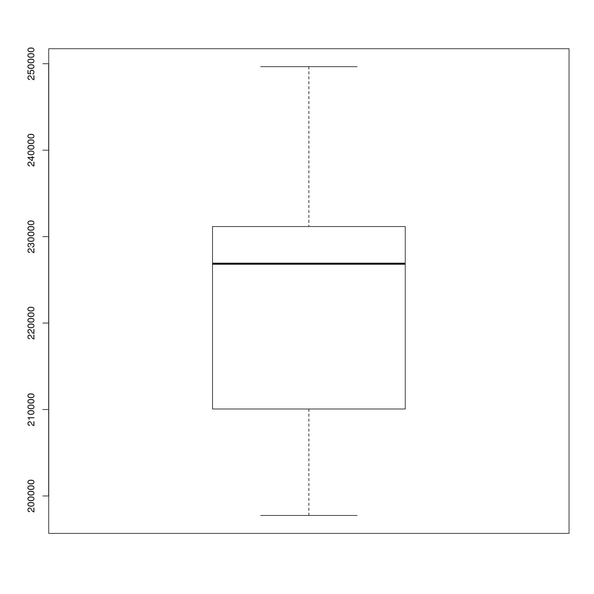
#Al especificar una variable, puedo ver el valor que toma cada uno de sus registros (Index)
plot(iris$Sepal.Length,type = "p") # Un punto por cada valor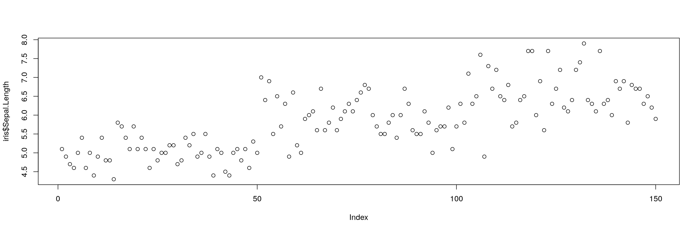
plot(iris$Sepal.Length,type = "l") # Una linea que una cada valor
plot(iris$Sepal.Length,type = "b") #Ambas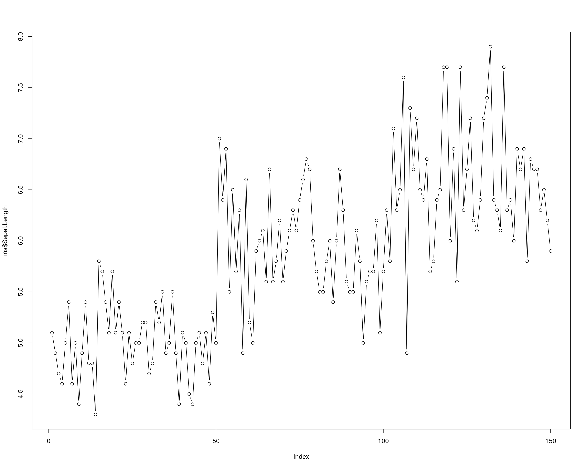
hist(iris$Sepal.Length, col = "lightsalmon1", main = "Histograma")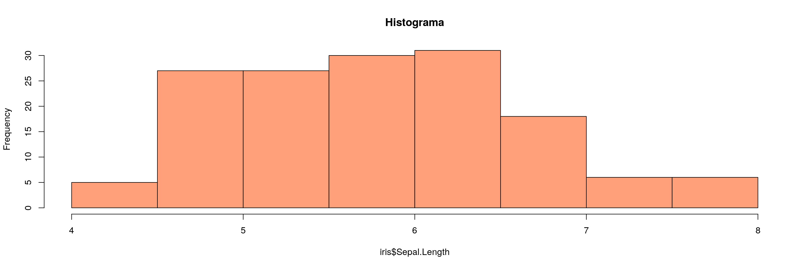
4.1.1.1 png
La función png() nos permite grabar una imagen en el disco. Lleva como argumento principal la ruta completa a donde se desea guardar la misma, incluyendo el nombre que queremos dar al archivo. A su vez pueden especificarse otros argumetnos como el ancho y largo de la imagen, entre otros.
ruta_archivo <- "../resultados/grafico1.PNG"
ruta_archivo## [1] "../resultados/grafico1.PNG"png(ruta_archivo)
plot(iris$Sepal.Length,type = "b")
dev.off()## png
## 2La función png() abre el dispositivo de imagen en el directorio especificado. Luego creamos el gráfico que deseamos (o llamamos a uno previamente construido), el cual se desplegará en la ventana inferior derecha de la pantalla de Rstudio. Finalmente con dev.off() se cierra el dispositivo y se graban los gráficos.
Los gráficos del R base son útiles para escribir de forma rápida y obtener alguna información mientras trabajamos. Muchos paquetes estadísticos permiten mostrar los resultados de forma gráfica con el comando plot (por ejemplo, las regresiones lineales lm()).
Sin embargo, existen librerías mucho mejores para crear gráficos de nivel de publicación. La más importante es ggplot2, que a su vez tiene extensiones mediante otras librerías.
4.1.2 Ggplot2
ggplot tiene su sintaxis propia. La idea central es pensar los gráficos como una sucesión de capas, que se construyen una a la vez.
El operador
+nos permite incorporar nuevas capas al gráfico.El comando
ggplot()nos permite definir la fuente de datos y las variables que determinaran los ejes del grafico (x,y), así como el color y la forma de las líneas o puntos,etc.Las sucesivas capas nos permiten definir:
- Uno o más tipos de gráficos (de columnas,
geom_col(), de línea,geom_line(), de puntos,geom_point(), boxplot,geom_boxplot()) - Títulos
labs() - Estilo del gráfico
theme() - Escalas de los ejes
scale_y_continuous,scale_x_discrete - División en subconjuntos
facet_wrap(),facet_grid()
- Uno o más tipos de gráficos (de columnas,
ggplot tiene muchos comandos, y no tiene sentido saberlos de memoria, es siempre útil reutilizar gráficos viejos y tener a mano el machete.
4.1.2.1 Gráfico de Puntos
A continuación se muestra un gráfico de varias capas de construcción, con su correspondiente porción de código. En el mismo se buscará visualizar, a partir de la base de datos iris la relación entre el ancho y el largo de los petalos, mediante un gráfico de puntos.
library(ggplot2) # cargamos la librería
ggplot(data = iris, aes(x = Petal.Length, Petal.Width, color = Species))+
geom_point(alpha=0.75)+
labs(title = "Medidas de los pétalos por especie")+
theme(legend.position = 'none')+
facet_wrap(~Species)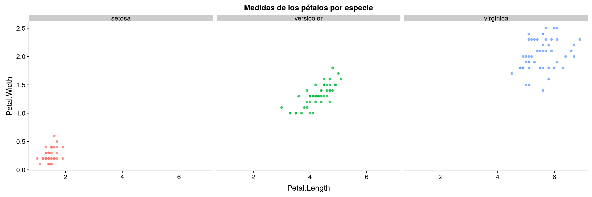
4.1.2.2 Capas del Gráfico
Veamos ahora, el “paso a paso” del armado del mismo.
En primera instancia solo defino los ejes. Y en este caso un color particular para cada Especie.
g <- ggplot(data = iris, aes(x = Petal.Length, Petal.Width, color = Species))
g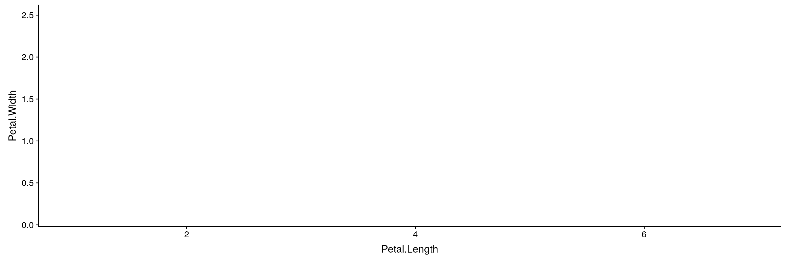 Luego, defino el tipo de gráfico. El alpha me permite definir la intensidad de los puntos
g <- g + geom_point(alpha=0.25)
g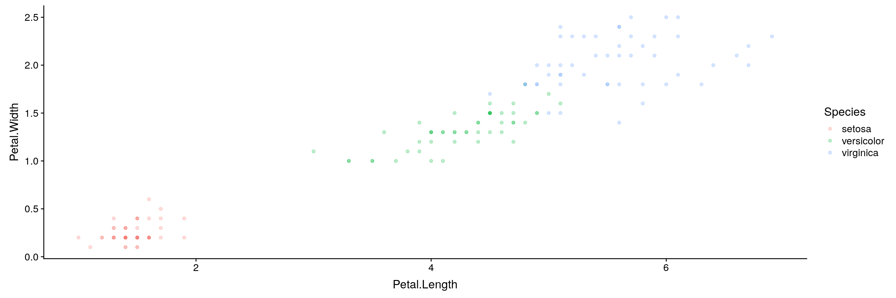 Las siguientes tres capas me permiten respectivamente:
- Definir el título del gráfico
- Quitar la leyenda
- Abrir el gráfico en tres fragmentos, uno para cada especie
g <- g +
labs(title = "Medidas de los pétalos por especie")+
theme(legend.position = 'none')+
facet_wrap(~Species)
g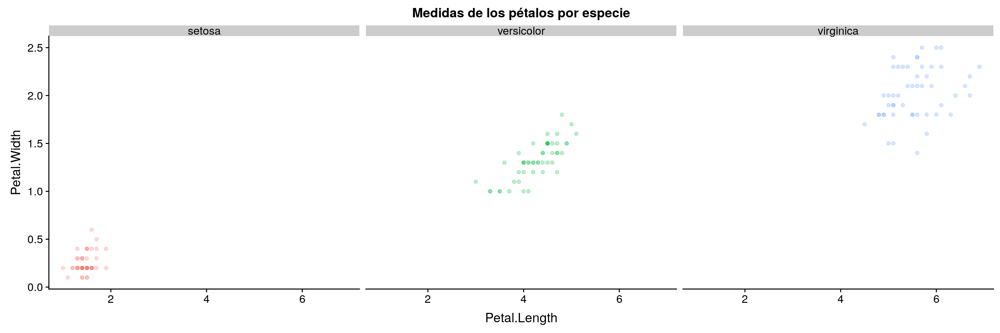
4.1.2.3 Extensiones de GGplot.
La librería GGplot tiene a su vez muchas otras librerías que extienden sus potencialidades. Entre nuestras favoritas están:
- gganimate: Para hacer gráficos animados.
- ggridge: Para hacer gráficos de densidad faceteados
- ggally: Para hacer varios gráficos juntos. ^
library(GGally)
ggpairs(iris, mapping = aes(color = Species))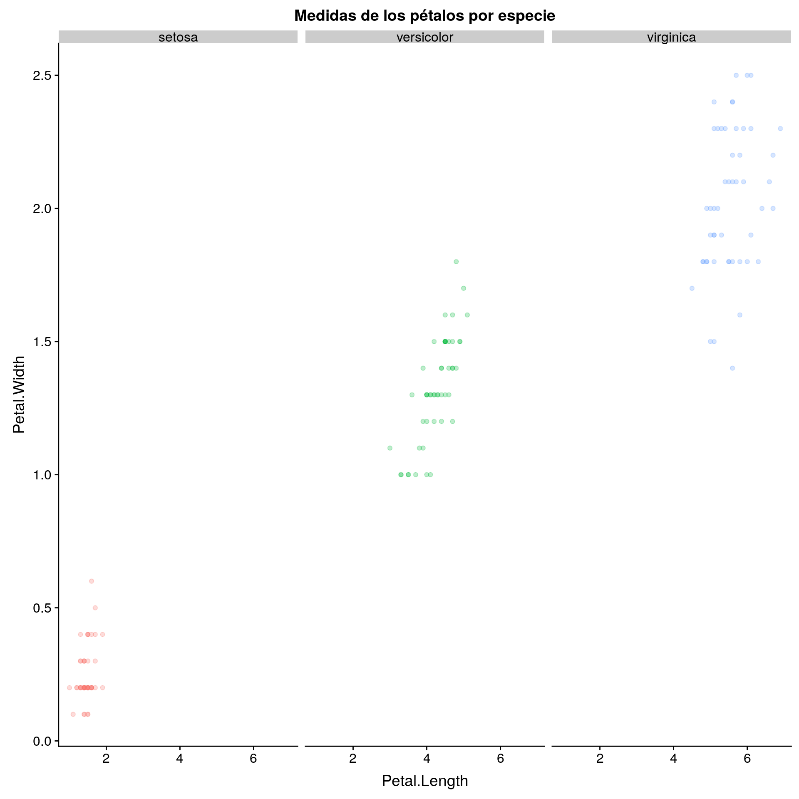
library(ggridges)
ggplot(iris, aes(x = Sepal.Length, y = Species, fill=Species)) +
geom_density_ridges()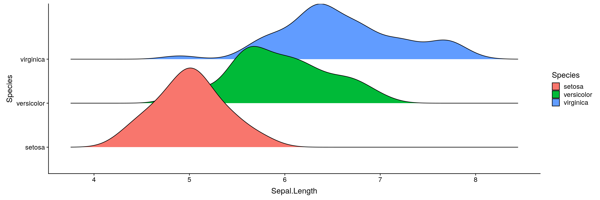
También hay extensiones que te ayudan a escribir el código, como esquisse
iris <- iris
#Correr en la consola
esquisse::esquisser()4.1.3 Dimensiones del gráfico
Esta forma de pensar los gráficos nos permite repenser los distintos atributos como potenciales aliados a la hora de mostrar información multidimensional. Por ejemplo:
- color
color = - relleno
fill = - forma
shape = - tamaño
size = - transparencia
alpha = Abrir un mismo gráfico según alguna variable discreta:
facet_wrap()- Los atributos que queremos que mapeen una variable, deben ir dentro del aes(),
aes(... color = variable) Cuando queremos simplemente mejorar el diseño (es fijo), se asigna por fuera, o dentro de cada tipo de gráficos,
geom_col(color = 'green').
4.1.4 Treemaps
library(treemapify)Trabajo doméstico no remunerado
trabajo_no_remunerado <- read_csv('../fuentes/prom_t_simul_dom_16_sexo__annio__g_edad_limpio.csv') trabajo_no_remunerado %>%
filter(sexo != 'TOTAL', grupo_edad != 'TOTAL') %>%
mutate(promedio_hs_diarias = as.numeric(promedio_hs_diarias),
sexo = case_when(sexo=='m'~'Mujer',
sexo=='v'~'Varón')) %>%
ggplot(., aes(area = promedio_hs_diarias, fill = promedio_hs_diarias, label = grupo_edad,
subgroup = sexo)) +
geom_treemap() +
geom_treemap_subgroup_border() +
geom_treemap_subgroup_text(place = "centre", grow = T, alpha = 0.5, colour =
"black", fontface = "italic", min.size = 0) +
geom_treemap_text(colour = "white", place = "topleft", reflow = T)+
theme(legend.position = 'none')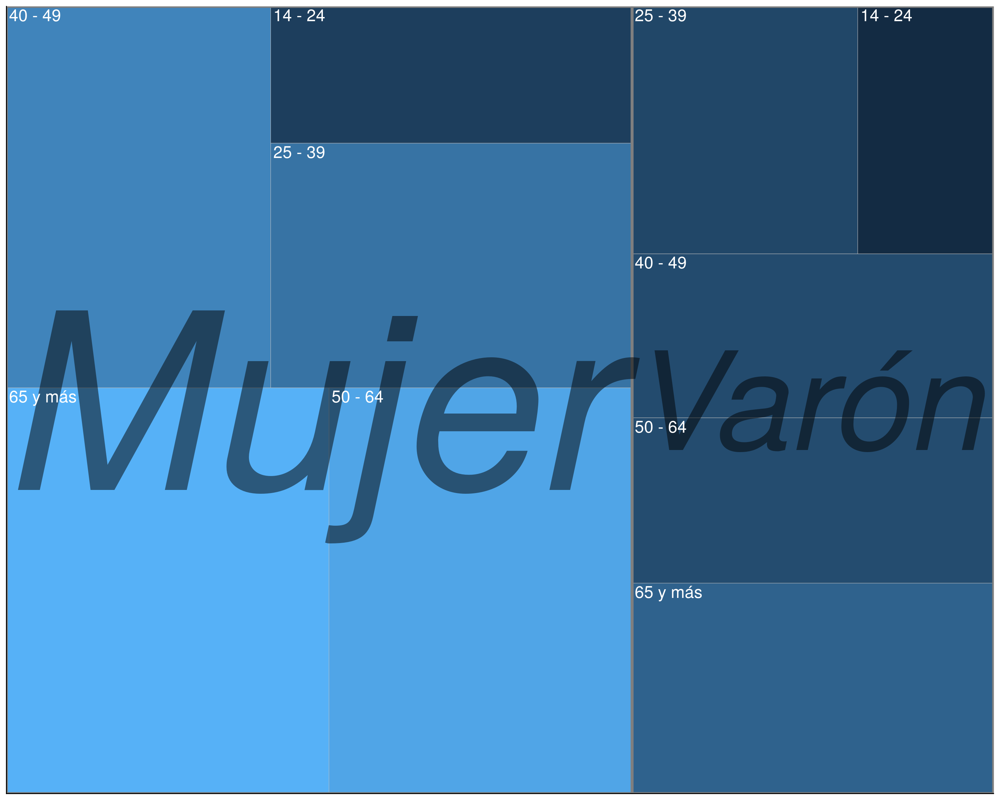
trabajo_no_remunerado %>%
filter(sexo != 'TOTAL', grupo_edad != 'TOTAL') %>%
mutate(promedio_hs_diarias = as.numeric(promedio_hs_diarias)) %>%
ggplot(., aes(area=promedio_hs_diarias, fill=sexo, label=sexo))+
geom_treemap() +
geom_treemap_text(colour = "white", place = "topleft", reflow = T)+
facet_wrap(.~grupo_edad, ncol = 1)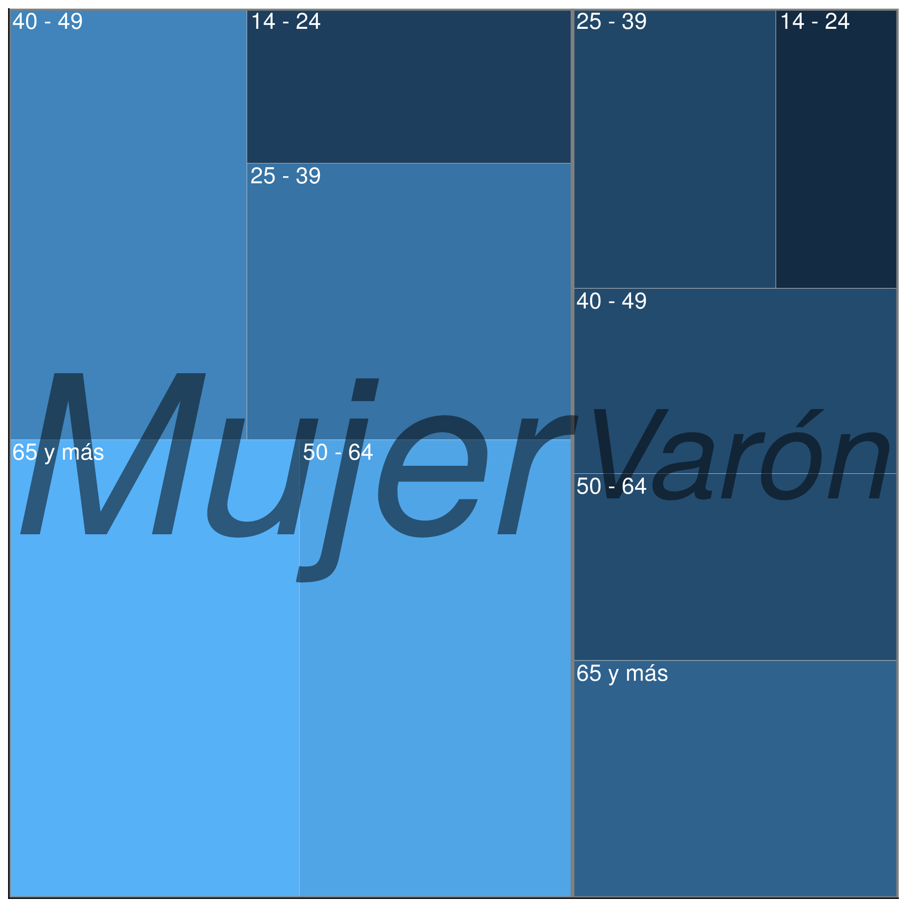